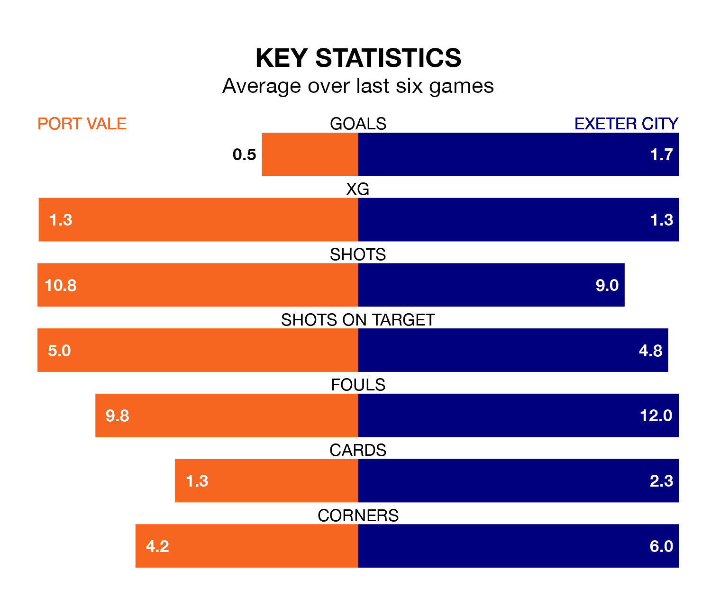

Exeter City face Port Vale on Saturday seeking to protect their long unbeaten run in EFL League One.
Exeter are unbeaten in seven, with four wins and three draws, ahead of the 3pm kick-off.
They face a Vale team who have won two and drawn two over the same number of games.
In the last 10 years, Vale and Exeter have played each other on 15 occasions. Vale won seven of them, Exeter six, and they drew twice.
On average, the Valiants scored 0.9 goals and Exeter 1.1 in those matches.
Their last meeting was on December 9, when Vale won 1-0 away.
Vale are 21st in the table after 42 games, of which they have won 10 and drawn 10, earning 40 points.
Exeter are seven places ahead of the Valiants in 14th, with 15 wins and 10 draws putting them on 55 points.
With 38 goals in 42 games so far this season, the hosts are scoring at below the league average rate with 0.9 goals per game. And they are conceding more than average, letting in 66 goals at a rate of 1.6 per game.
City are also below average scorers, with 0.9 goals per game, compared to a league average of 1.3. They have conceded 1.3 goals per game.
Vale's last match was on Wednesday, a 3-0 loss against Peterborough United.
Exeter drew 2-2 with Leyton Orient last time out, on Tuesday, with Millenic Alli and Tom Carroll on the scoresheet.
Updated: 10:01 (UTC), 12/04/24